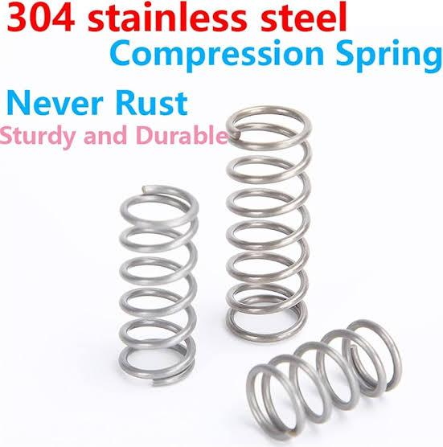
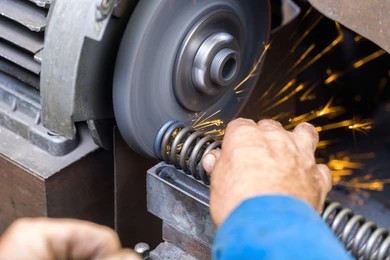
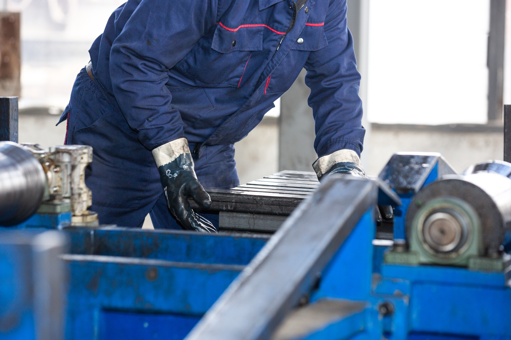
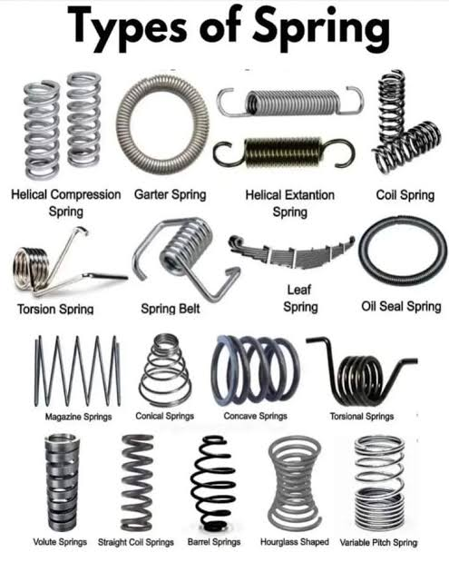
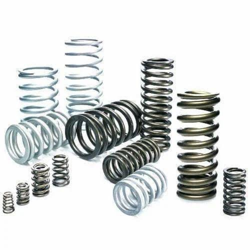
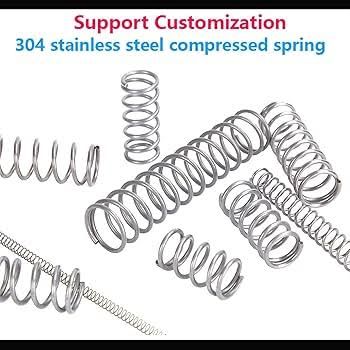
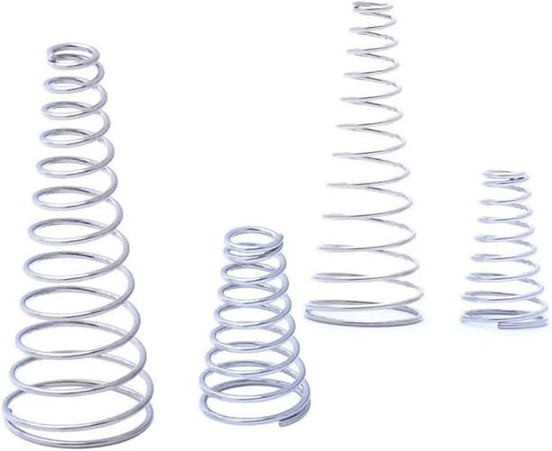
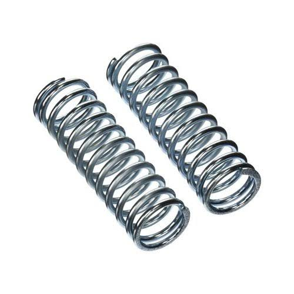

44+ Years of Experience
Precision Springs and Wire Forms You Can Trust
Atlantic Industries is a well-known spring manufacturing firm focused on quality, reliability, and fast delivery. We produce compression, extension, torsion, and special-purpose springs, wire shapes, flat pressings, and pressed components.

About Us

Founded by Late Shri Manikrao B. Bhise and Late Shri Sukhdeo Babanrao Bhise, Atlantic Industries has grown through deep manufacturing experience and continuous technological improvement.
We keep a complete range of stainless and spring steel wire for immediate use and maintain skilled manpower with strong quality testing equipment to deliver reliable products.
Our Products





Trusted Partners
Customers Who Rely on Us
Companies across Maharashtra trust Atlantic Industries for precision, reliability, and fast delivery.
Client Feedback
Testimonials
What our clients say about working with Atlantic Industries.
"Atlantic Industries has consistently delivered spring batches with excellent dimensional accuracy. Their commitment to timelines has helped us avoid production delays."
"From prototype to bulk supply, their team has been responsive and technically strong. The product quality remains stable across every lot."
"We appreciate their flexibility for special-purpose spring designs. Atlantic Industries understands manufacturing needs and always supports urgent requirements."
Contact
Factory 1
14/9 Vitthal Nagar, 15 No. Opp. Pune Urban Bank, Hadapsar, Pune - 411028
Factory 2
S. No. 50, Lane No. 6, Bhagyoday Nagar, Kondhwa, Pune - 411048
Office
8/14, Pleasant Park Society, Fatimanagar, Pune - 411013